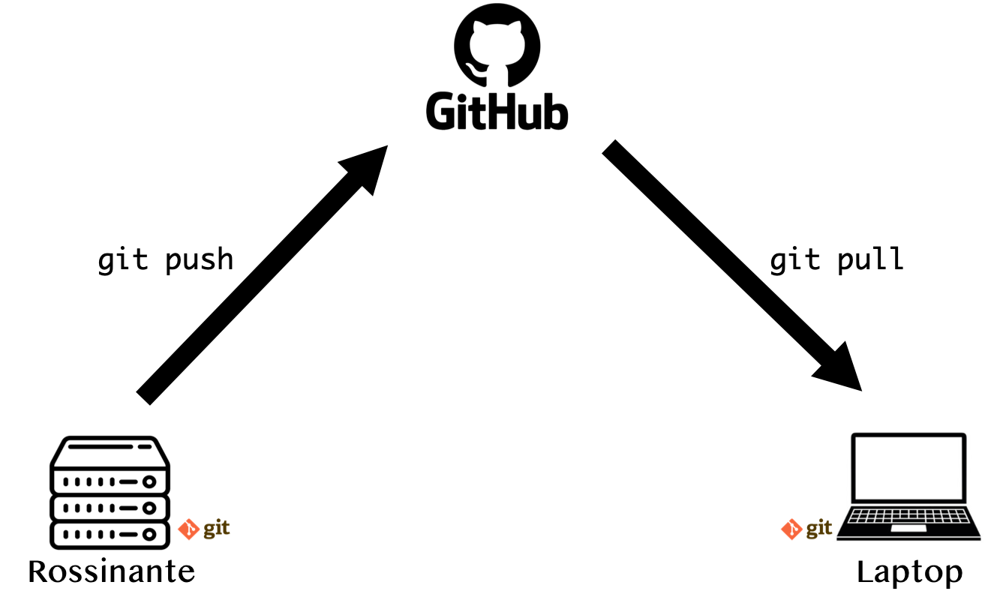

4 Sending files
When you want to run analyses on Rossinante, you need to transfer files (code and data) from your laptop to the server. Here we will see three methods.
4.1 sFTP
The easiest way to transfer files from your laptop to Rossinante (or vice versa) is by using the sFTP protocol (Secure File Transfer Protocol). The Filezilla client is a freeware that supports this protocol. You will need to define the following parameters (Figure 4.1):
- Host:
sftp://92.168.45.3 - Username:
jdoe(Rossinante username) - Password: your Rossinante user’s password
- Port:
22(SSH port)
To make the connection, click on Quick connect.

The left panel A lists your local folders/files. The right panel B shows the content of your personal directory on Rossinante.
To send local files to Rossinante, first select the directory in B to send these files in. Then select files/folders in A, right click, and click on Upload.
To send remote files to your laptop, first select the directory in A to send these files in. Then select the files in B, right click, and click on Download.
4.2 The scp command
The Secure copy utility allows you to copy files from your laptop to a remote server (and vice versa) using the SSH protocol.
Let’s say we want to copy the local file script.R, located in the Documents/ folder, to Rossinante in the folder ~/projects/. We will use scp as follow:
If we want to download a file from Rossinante:
To copy a folder (and its subfolders), we will add the option -r (for recursive):
# Send a folder to Rossinante ----
scp -r ~/Documents/project_1 rossinante:~/projects/
# Download a folder from Rossinante ----
scp -r rossinante:~/projects/project_1 ~/Documents/You can use the option -p to preserve modification times, access times, and modes from the original file(s). This can be useful when you want to copy a project tracked by git.
# Send a folder to Rossinante (and preserve modification times) ----
scp -r -p ~/Documents/project_1 rossinante:~/projects/NB – You can also use the command rsync instead of scp. For further information.
4.3 GitHub
If your project is tracked by the versioning system control git, you may prefer sending files through GitHub (or GitLab). This method has the advantage of keeping your project tracked by git and synchronized with GitHub.
The workflow is the following (Figure 4.2):
- On your laptop, commit changes
- Then push changes to your repository on GitHub
- Connect to Rossinante via SSH (or RStudio Server)
- Clone the GitHub repository on Rossinante or pull changes if your project is already cloned
- Run analysis on Rossinante
Once your analysis is finished, you can (Figure 4.3):
- Track new files and commit changes
- Push changes to your repository on GitHub
- On your laptop, pull changes

At this stage, the project on your laptop, GitHub and Rossinante is in the same state.
Important – GitHub does not accept file > 100MB. If your project contains large datasets (added in the .gitignore), you need to send these files through sFTP or scp (Figure 4.4).

If your results (created on Rossinante) are > 100MB, you will need to add theses files to the .gitignore and send them to your laptop with the sFTP protocol.